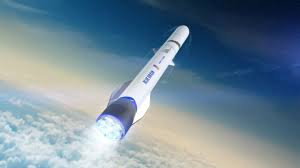

Es una compañia fundada por Jeff Bezos en 2000
Tiene como objetivo la creación de cohetes para el lanzamiento
de humanos al espacio, pero que estos sean suborbitales
es decir, que no den la vuelta a la tierra sino que suban y bajen
pasando la linea de Karman, que es donde comienza el espacio.
Además buscan que estos lanzamientos sean para turistas.

__página principal__
__Cohetes Amateur__
__Comparacion__
__SpaceX__